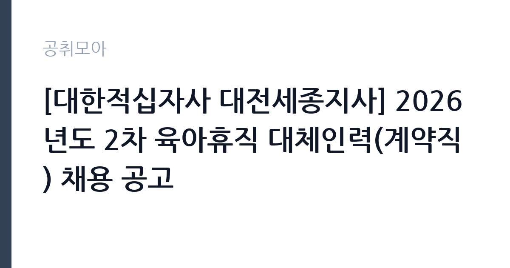

[공공기관] [대한적십자사 대전세종지사] 2026년도 2차 육아휴직 대체인력(계약직) 채용 공고
대한적십자사 · 대전 · 마감 2026-10-07 (D-15) · 출처 잡알리오

한눈에 보는 모집 조건
| 기관 | 대한적십자사 |
|---|---|
| 공고명 | [대한적십자사 대전세종지사] 2026년도 2차 육아휴직 대체인력(계약직) 채용 공고 |
| 고용형태 | 정규직 |
| 근무지 | 대전 |
| 게시일 | 2026-09-22 |
| 마감일 | 2026-10-07 (D-15) |
지원자격, 이렇게 읽으세요
- 공공기관 채용공시
- 세부 조건은 원문 공고문 확인
지원 자격은 병역법상 병역의무 불이행자에 해당하지 않고, 임용 예정일부터 근무가 가능해야 합니다. 임용일 기준 만 60세 미만이어야 하며, 적십자사 직원운영규정의 임용결격사유에 해당하지 않아야 합니다. 세부 자격과 제출서류는 적십자사 채용 홈페이지의 원문에서 확인하시기 바랍니다. 대체인력 채용이므로 해당 업무의 실무 경험이 있다면 자기소개서에 구체적으로 기술하시기 바랍니다.
이 공고의 포인트
첫 번째 포인트는 대한적십자사라는 국내 대표 기관의 지사에서 근무한다는 점입니다. 혈액과 구호, 봉사 사업의 현장을 가까이에서 경험할 수 있습니다. 두 번째로 임용 예정일이 11월 1일로 확정되어 있어 합격 후 일정을 세우기 쉽습니다. 세 번째로 육아휴직 대체인력은 근무 기간이 명확해, 다음 진로를 준비하며 경력을 이어가려는 분께 좋습니다. 대전·세종 지역 구직자에게 적합한 공고입니다.
전형은 어떻게 진행되나
전형은 서류전형과 면접전형으로 진행되는 것이 일반적이며, 세부 일정은 적십자사 채용 홈페이지의 원문에서 확인하시기 바랍니다. 접수 기간이 약 2주로 여유가 있으나, 미리 지원서를 작성해 두시기 바랍니다. 서류전형에서는 지원서의 완성도와 근무 가능 여부가 중요하며, 면접에서는 적십자 인도주의 활동에 대한 이해를 평가할 수 있습니다.
원문에서 확인한 전형 방식
○ 병역법 제76조에 따른 병역 의무 불이행자에 해당되지 않는 자 ○ 임용(예정)일로부터 근무 가능한 자 ○ 대한적십자사 직원운영규정 제56조(정년)에 해당되지 않는 자(임용일 기준 만60세 미만인 자) ○ 대한적십자사 직원운영규정 제20조 임용결격사유에 해당되지 않는 자 ○ 임용(예정)일 (2026. 11. 1.)부터 근무가능한 자
이런 분께 추천해요
- 대전·세종 지역에서 근무가 가능하신 분
- 적십자 인도주의 사업에 관심 있는 구직자
- 11월 1일부터 근무가 가능한 준비된 지원자
지원 전 체크리스트
- 임용 예정일 11월 1일부터 근무가 가능한지 확인했습니다
- 적십자사 임용결격사유에 해당하지 않음을 확인했습니다
- 만 60세 미만 연령 요건을 충족하는지 확인했습니다
- 원문 공고문의 접수방법과 마감일 10월 7일을 확인했습니다
모집 일정과 제출 타이밍
마감일은 2026년 10월 7일이며, 임용 예정일은 11월 1일입니다. 서류와 면접 전형이 10월 중에 진행될 것으로 보이니 일정을 비워두시기 바랍니다. 현재 재직 중이라면 11월 입사에 맞춰 인수인계 일정을 미리 계산해 보시기 바랍니다. 합격자 발표 일정은 적십자사 채용 홈페이지의 공지를 통해 확인하시기 바랍니다.
직무 이해하기: 공공기관
육아휴직 대체인력은 대전세종지사의 해당 부서에서 휴직자의 업무를 이어받습니다. 적십자 회비와 후원, 봉사 조직 지원, 구호 활동 보조 등 지사의 고유 업무를 맡게 됩니다. 대전에서 근무하며, 공공기관 카테고리 공고입니다.
자기소개서 작성 팁
자기소개서에서는 적십자 인도주의 활동에 대한 관심과 지원 동기를 진정성 있게 서술하시기 바랍니다. 봉사활동이나 사회공헌 경험이 있다면 구체적으로 기술하시기 바랍니다. 대체인력으로서 인수인계를 빠르게 받아 안정적으로 업무를 이어가겠다는 의지를 보여주시기 바랍니다.
면접 준비 포인트
면접에서는 적십자에 대한 이해와 지원 동기를 질문받을 가능성이 큽니다. 적십자의 주요 사업(혈액, 구호, 봉사)을 미리 살펴보고 본인의 생각을 정리해 두시기 바랍니다. 대체인력의 역할을 이해하고 있다는 점을 명확히 전달하시기 바랍니다.
급여·근무조건 읽는 법
보수 수준은 원문 공고문에서 확인하셔야 합니다. 적십자사 계약직의 급여는 사내 규정에 따른 급여 테이블이 적용되며, 통상 월급제로 지급됩니다. 정확한 기본급과 수당 구성, 4대 보험 적용 여부는 원문에서 확인하시기 바랍니다. 계약 기간과 연장 가능 여부도 원문에서 함께 살펴보시기 바랍니다.
자주 묻는 질문
- 육아휴직 대체인력의 근무 기간은 어떻게 됩니까
휴직자의 복귀 시점까지 기간을 정해 근무하는 형태입니다. 정확한 계약 기간은 원문 공고문에서 확인하시기 바랍니다. - 임용 예정일은 언제입니까
2026년 11월 1일부터 근무가 가능해야 합니다. 합격 후 일정에 차질이 없도록 미리 준비하시기 바랍니다. - 근무지는 어디입니까
대한적십자사 대전세종지사에서 근무하게 됩니다. 세부 근무 부서는 임용 시 안내받으시게 됩니다.
함께 보면 좋은 공고
[공공기관] 한국연구재단 PM(기초연구본부장) 초빙 재공고 — 마감 2026-10-13[공공기관] 칠곡경북대학교병원 2026년 9월 5차 임시직원 채용공고(물리치료사, 간호사, 주차, 조경관리) — 마감 2026-09-28[공공기관] [KDI국제정책대학원] 2026년 제10차 인턴직원 채용(경영기획) — 마감 2026-10-08출처: 잡알리오 공개정보를 바탕으로 공취모아가 정리한 안내글입니다. 모집 조건·일정은 변경될 수 있으니 지원 전 반드시 원문 공고문을 확인하세요. 본 글은 정보 제공용이며 합격을 보장하지 않습니다.